这个项目源于一个学校设计课题——一个住院部设计。在我初次接触医疗建筑设计时，面对复杂的医院平面功能组织感到无比困惑。传统的分析方法难以直观地展现各个功能空间之间错综复杂的关系，这让我意识到需要一个更智能的工具来辅助理解和优化建筑设计。
经过深入研究和开发，这个工具应运而生。它不仅能够识别和分析旧建筑的图结构关系，为改造设计提供数据支持，还能帮助设计师快速理解空间逻辑，优化功能布局。
通过将语义分割技术应用于建筑设计领域，我们实现了从手绘草图到智能分析的跨越，让每一位设计师都能更高效地完成复杂的建筑设计任务。
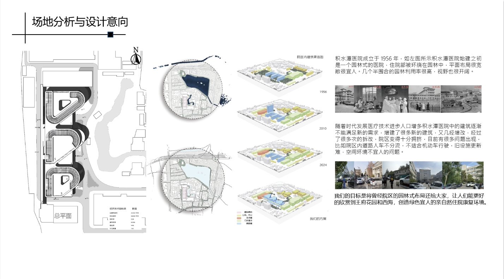
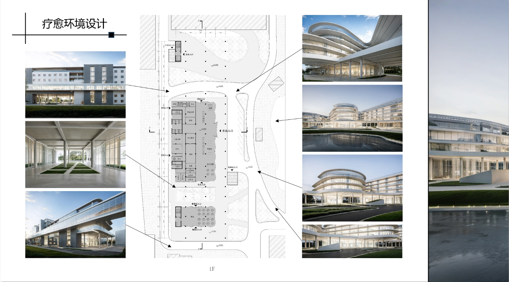
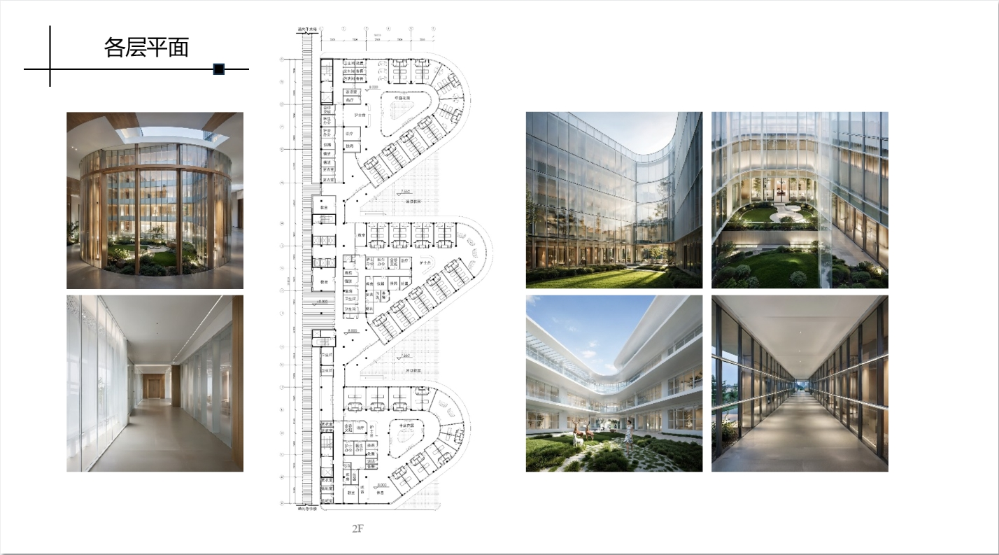
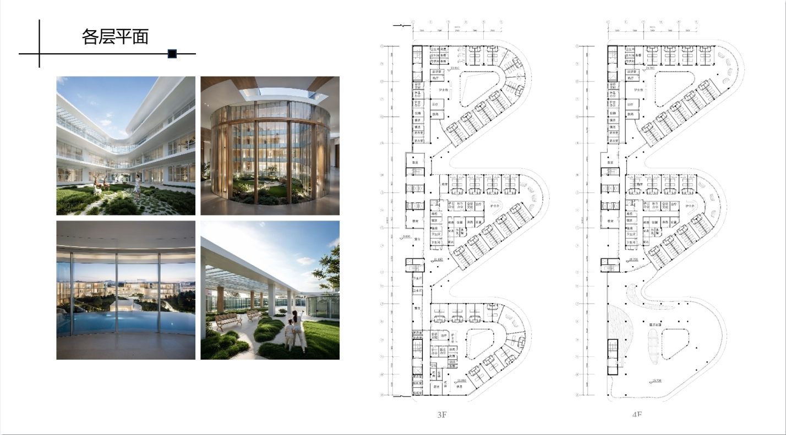
 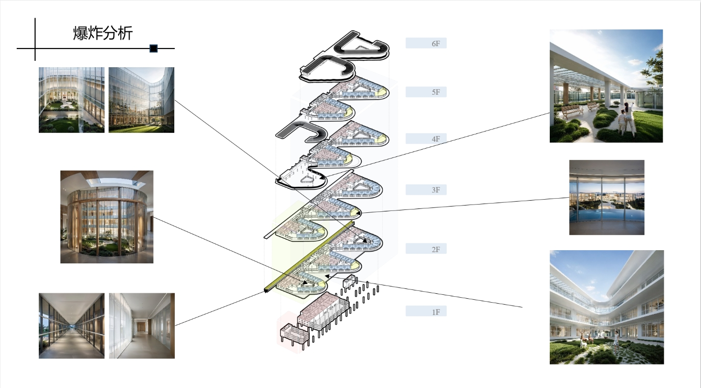
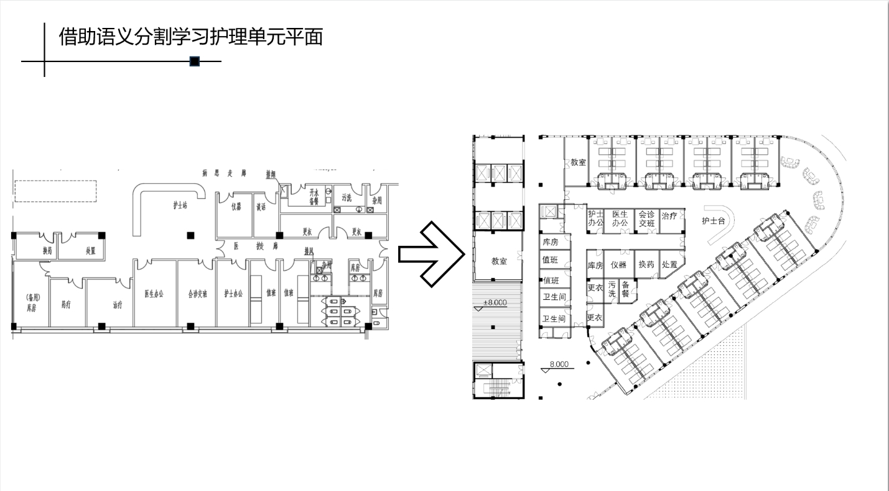
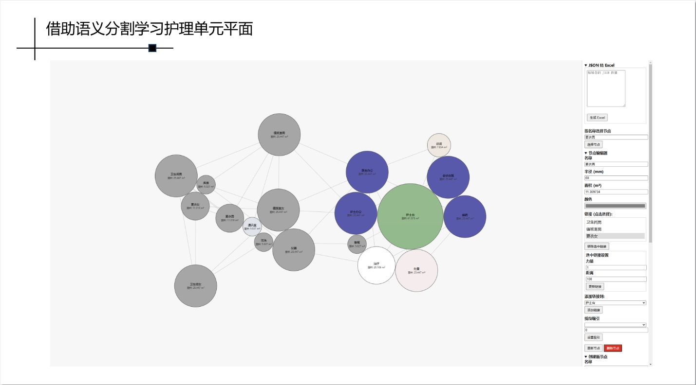
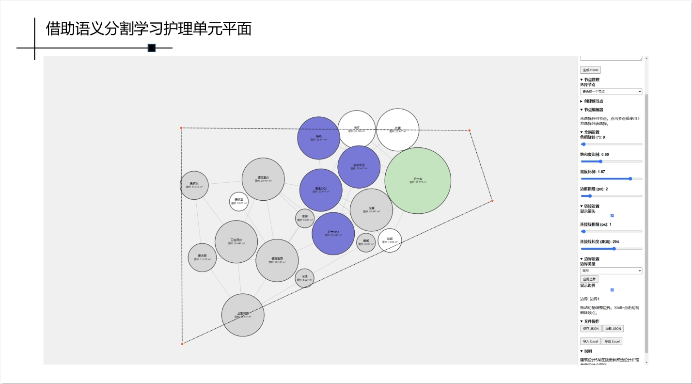
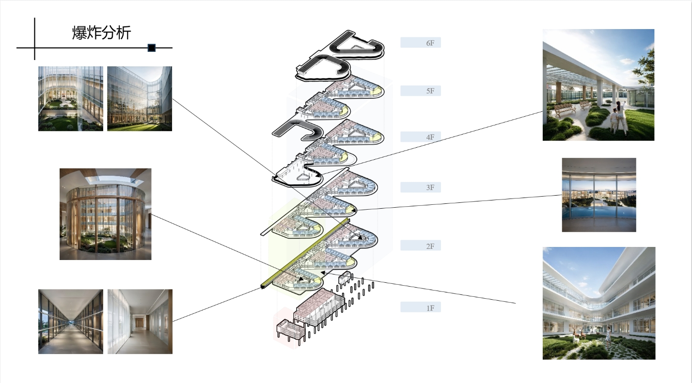
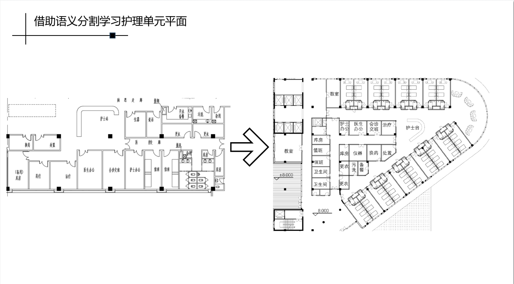
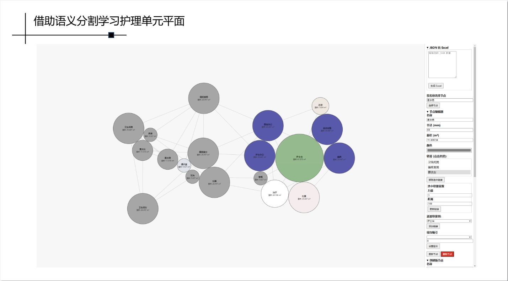
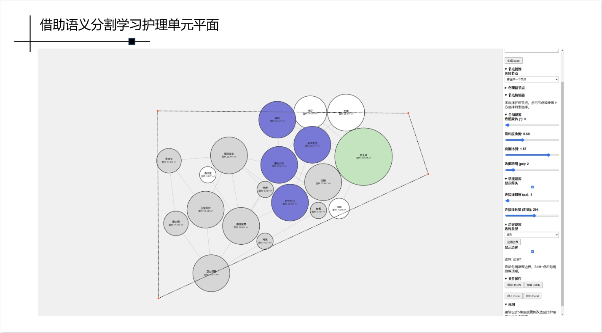
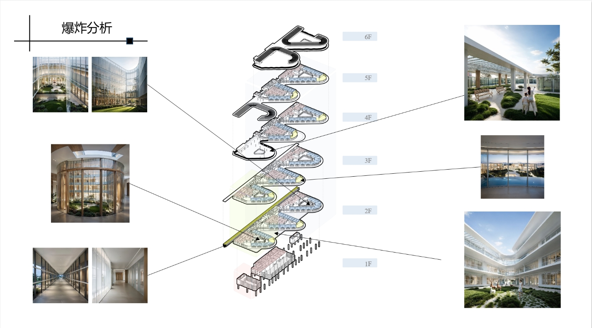
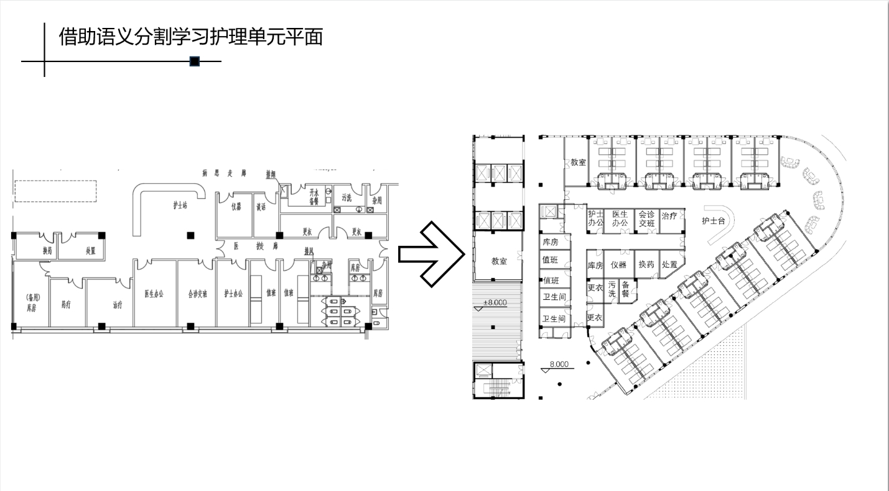
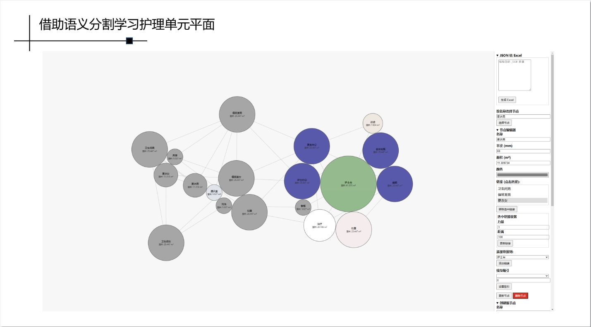
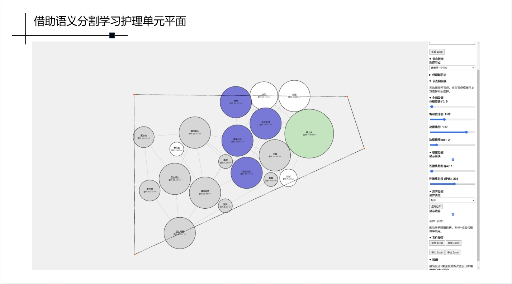
学校设计课中的应用